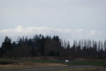
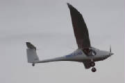
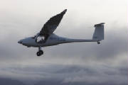
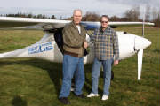

|
February 17th, 2013 - First
Flight!
After a few weeks of waiting for my schedule and the schedule of Stan Kasprzyk,
my test pilot, to coincide with suitable weather, things finally came together with clouds high enough and wind
near calm for the first two test flights of Sinus 912 N54PK. The only significant glitch is that the radio checks fine
with the engine off, but with the engine running we're getting only a squeal and side tone from one headset and nothing from
the other. After trying various combinations of headset and cords, we resorted to a hand-held radio for the first flights.
We started with a general check of ground handling, braking action, low speed taxi and high speed taxi, with no problems.
The high speed taxi runs got up to about 25 knots, when the plane started feeling light on the wheels. I had the tail
wheel swivel detents rather tight on advice from George Powers, which prevented us from getting the swivel to break free for
tight turns during the taxi tests, but the steering was adequate to turn within the available taxiway and ramp space.
I will reduce the swivel tension over the next few flights to find a setting that permits tight turns while retaining good
control during takeoff and landing.
After a check for general integrity and leaks, we then flew the first flight,
which went very well, indeed. Stan did nearly all the flying, with me monitoring the engine parameters and assisting
with the radio calls. A local RV-12 builder flew chase and provided some in-flight photos. The plane
flies superbly -- it has delightful handling, and flew straight and level with hands and feet off the controls. The engine
is very smooth, with all temperatures and pressures comfortably in the green. I flew most of the second flight, which
demonstrated my very rusty flying skills, kept out of serious trouble by some quick intervention by the test pilot when I
failed to adequately compensate for engine torque at the start of the takeoff roll. I'll need further dusting off before
I'm ready to solo. Here's a link to Stan's web site, where he has a very nice write-up of the day's events. And here's a link to a PhotoShow built by a member of our EAA chapter.
Many thanks to the Pipistrel team for producing great aircraft that is going
to give me much enjoyment in the coming years. I'm making plans to fly it to Oshkosh this summer.

|
| We have lift off! Note the short takeoff roll. |



|
| Success! Test pilot Stan Kasprzyk on the left, me on the right. |
February 17th to July 14th, 2013
- Phase 1 flight test complete: 43.8 hours
The Phase
1 flight test period proceeded in a very straightforward manner. The normal lousy winter weather here in
the Pacific Northwest, combined with the challenge of matching schedules between me and Stan restricted flying to one day
in February (flights one and two), one day in March (flights three and four), one day in April (flights five and six) and
one day in May (flights seven, eight and nine, including my first solo in the Sinus).
We began with
opening the flight envelope, first slow flight then high speed up to just below VNE. Next came approach
to stalls at all four flap settings, after which we focused on the landing pattern until I became comfortable, competent and
consistent with the approach, flare, landing and rollout. On flight eight we did the first in-flight shutdown,
prop feather, a few minutes of gliding flight, unfeather and restart. At the end of the flight Stan signed
my log book for solo, to satisfy a stipulation by my insurance policy that required an instructor endorsement in the plane
before soloing it.
Flight nine was my first solo in the plane, which was a very
satisfying feeling, fulfilling a lifelong dream to fly a plane that I built myself. I was very grateful
to have been able to benefit from Stan’s competent instruction to prepare me to complete the flight safely.
Total flight time at the end of flight nine was 7.8 hours. There were no squawks on the plane during
this period. The remainder of the Phase 1 flight test
period consumed twenty-nine flights and 35 flight hours. During this time I checked takeoff and climb performance, power
on and power off stall speeds at all flap settings, accelerated stalls, glide performance (prop feathered), performed half-turn
spins, and generally collected enough data points to confirm that the Pipistrel Sinus 912 Flight Manual applies to my aircraft.
I calibrated the Dynon fuel flow transducers, swung the wet compass
and Dynon magnetometer (very consistent and accurate), flew the plane to a nearby avionics repair facility to have the initial
transponder checks performed and logged in the aircraft log book (the first check of a new transponder installation includes
connecting a calibrated altitude source to the altimeter static line and running the altitude up to the maximum height, checking
the Mode C code at several points). I disassembled the gascolator and checked
the fuel filter a couple of times during this period, to see if I was picking up any debris from the fuel tanks as the initial
few tanks of gas were flushed through the system. I found only a very minimal quantity of small particles, so my careful
vacuuming while grinding out the fuel cap openings appears to have done its job. The tailwheel steering and swivel action needed some work, so I re-greased the swivel plate, removed and greased
the springs and steel balls for the swivel detents, and adjusted the detent screws until I achieved a suitable balance between
positive steering and swivel breakout force. After this initial lubrication and adjustment, the detent action has remained
very consistent between annual condition inspections. Squawks: 1. I found a small brake fluid leak at the fitting at the right
wheel, which I fixed by tightening the fitting and re-bleeding the right brake. 2. Dynon issued a recall for my Skyview displays, so I returned them
for rework, although I never experienced any operating issues. 3. The gas caps became difficult to turn for insertion and removal after a few hours,
which I realized was due to swelling of the rubber o-rings that were supplied with the kit. I found the o-ring size
in the Parts Catalog (25.07 mm x 2.62 mm), and located an exact size replacement nitrile o-ring, which is a Caterpillar part
OR46, available from Tornado Heavy Equipment Part as 1S7462. Google is such a great resource! The nitrile o-rings
appear impervious to fuel, seal well and allow the fuel caps to be removed and installed easily. I replace them once
a year, although they exhibit no deterioration or wear in that time.
|